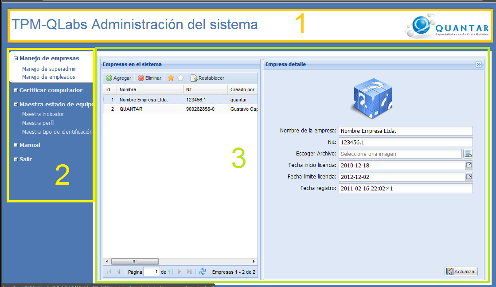

Figura 1. Pantalla principal del súper administrador .
Básicamente la interfaz del súper administrador está compuesta de los siguientes componentes.
(1) Cabecera de administración del sistema.
(2) Menú que muestra las opciones a las cuales puede acceder el súper administrador.
(3) Área de trabajo que muestra información según el menú que seleccione el usuario.